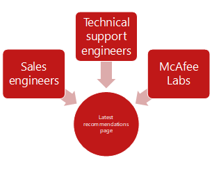

The Challenge
At McAfee, best practices were spread throughout our product documentation, blog posts, technical articles, and marketing content. Our stakeholders wanted a single location where internal and external customers could find the latest best practices.
In addition, because our product documentation authors were embedded in our development teams, our product documentation had great access to information on new features, but did a poor job speaking to the realities of customer’s complex environments. We wanted to make our content more customer-focused.
The Response
We created a working definition for “best practice,” set up latest recommendations pages to collect and surface suggestions from the field, and initiated cross-department meetings to elevate the best of those recommendations to best practices in our product documentation.
Defining “best practice”
We had conversations with internal and external stakeholders. From these conversations, we generated this summary of what customers meant when they asked for “best practices.”
- Recommendations for specific situations and environments
- Cross-product workflows
- Troubleshooting and workarounds
- Threat landscape information
- Configuration instructions to combat specific threats
All of these items are information that needs to come from the field. Typically, this information comes from technical support engineers, sales engineers, and McAfee Labs. We needed to collect, promote, and share the expertise of these groups.
Collecting recommendations
Because the threat landscape is constantly changing, we needed a light-weight and speedy process for turniong the tribal knowledge of our sales engineers, technical support engineers, and other field employees into actionable best practices for our customers.

We created Latest Recommendations pages for our top products. For example, the Latest Recommendations page for McAfee Endpoint Security.
All field employees are allowed to post material to these pages as needed. These pages act as a net to capture all the latest field recommendations. Once collected, we can sift through these recommendations and promote the best ones to official McAfee best practices.
Promoting recommendations to best practices
We needed a process to vet the material that was posted to our latest recommendations pages, and to capture the best recommentations in our official product documentation. We set up monthly meetings between our Sales engineers, technical service engineers, product managers, architects, and product documentation authors. During these meetings, we walked through the latest recommendations pages, culled articles that were no longer relevant, and ear-marked articles that should be refined and included in our product documentation on docs.mcafee.com.
The Benefits
To borrow an analogy from the restaurant industry, our monthly best practices meeting opened lines of communication between the front of the house (sales engineers, account managers, technical support engineers), and the back of the house (development engineers, content authors). Increasing the amount of contact between these groups enablex us to respond better to customer needs.
Customers receive timely recommendations on the changing threat landscape. The most helpful and most valuable recommendations graduate to best practices, and are included in our product documentation.